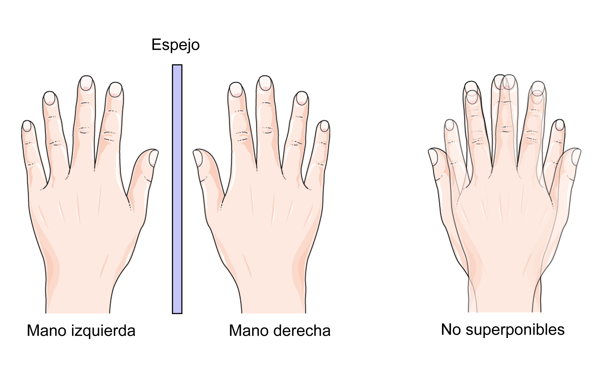
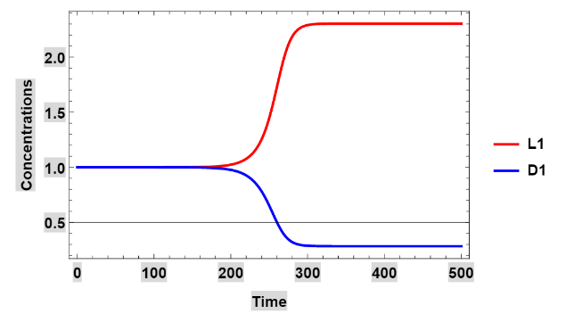

Hace poco menos de un año estaba decidiendo qué hacer para mi trabajo de grado y poder graduarme en la universidad. La Universidad Nacional de Colombia ofrece varias alternativas y en particular para mi carrera existen las siguientes tres:
En esa época me dije a mí mismo que después de graduarme iba a entrar en el mundo laboral y que después de algun tiempo iniciaría alguna maestría, por lo que me decanté por escoger la opción de escribir un trabajo de grado investigativo. Inicialmente quería escribirla acerca de los autómatas y su aplicación al model checking y verificación formal de programas. Nunca me imaginé investigar nada relacionado con la química ni en el origen de la vida, pero ya ves, muchas veces resultamos trabajando en donde menos lo esperamos. Al inicio pensé "¿Pero qué tiene que ver mi carrera con la química?" y, aunque ya había cursado una asignatura que se llama biología computacional y expandido un poco mi visión de las ciencias de la computación, nunca había escuchado de aplicaciones computacionales en la química más allá de la teoría de grafos. Dicho lo anterior, en este texto me gustaría presentar, de manera poco formal y quizá descuidada, la razón de ser de mi trabajo de grado.
El problema de comprender el origen de la vida es quizá, una de las tareas que nos hemos planteado resolver como humanidad desde que tenemos uso de razón. Una de las posibles explicaciones tiene sus raíces en la química, y más específicamente en la quiralidad de las biomoléculas, moléculas de las que se componen los seres vivos.
Para entender el concepto de quiralidad basta con ver nuestras dos manos; aunque son idénticas, al poner una sobre la otra, estas no coinciden quedando el dedo pulgar sobre el dedo meñique. No obstante, si juntamos las palmas, podemos ver que sí coinciden. Esto mismo sucede a escala molecular con los componentes de los seres orgánicos: ¡existe una versión izquierda y una derecha para cada molécula! De esta manera, podemos clasificarlas como L-quirales y D-quirales.
Imágen tomada de investigación y ciencia.
Similar a lo que ocurre con los seres humanos a la hora de escribir -unos prefieren escribir solo con la derecha y otros solo con la izquierda- sucede con las biomoléculas y se ha observado que 19 de los 20 los aminoácidos naturales son todos L-quirales, mientras que los azúcares son D-quirales. Este fenómeno es conocido como la homoquiralidad biológica y explicar la razón por la que la naturaleza prefiere un cierto tipo de quiralidad sobre otro es un prerrequisito para comprender el origen la vida en la tierra. Hay varias hipótesis que indican que antes del surgimiento de la vida había la misma cantidad de especies L-quirales que la de su contraparte, pero algo sucedió e hizo que hubiera un desequilibrio y se comenzaran a producir más moléculas de un tipo que de otro. Es decir que el sistema químico presente en la tierra antes del origen de la vida era inestable.
Un sistema químico es inestable cuando pequeñas perturbaciones pueden desencadenar dinámicas que transforman el sistema casi por completo. El caso más dramático es el origen mismo de la vida, que puede entenderse como el resultado de una pequeña perturbación que transformo por completo la tierra prebiótica, es decir, antes del surgimiento vida.
Para poder estudiar dicho sistema, los químicos plantean modelos químicos de este a través de conjuntos de reacciones químicas abstractas, en donde los compuestos no están representados por compuestos químicos específicos, como por ejemplo el CO2, sino por letras que representan a las especies quirales y las especies sin quiralidad, además de las constantes de cada reacción.
A partir de estas reacciones químicas abstractas es posible extraer fórmulas matemáticas (en forma de igualdades y desigualdades - formalmente conocidas como sistemas semialgebraicos), las cuales permiten hacer un análisis del sistema. No obstante, tales fórmulas son difíciles de analizar y procesar a mano debido a que implican muchas variables. Esto hace que los químicos e interesados en el tema empleen mucho tiempo cuando intentan determinar si un modelo químico es inestable, usando, la mayor parte del tiempo, metodologías basadas en prueba y error.
Mi director de tesis, el profesor Juan Andrés Montoya, ya había trabajado en el tema y en el desarrollo de un algoritmo, pero como muchas de las cosas que se encuentran en el mundo de la investigación, todo estaba escrito en un paper y no había implementación alguna. Se habían llevado a cabo algunas implementaciones, pero estas tomaban un enfoque diferente al planteado inicialmente por el profesor, que estaban más relacionadas con obtener soluciones aproximadas del sistema y no con las soluciones exactas. Esto ocasiona que muchas veces la implementación resultara con análisis, que al momento de hacer las simulaciones, se verificaba que eran erroneos.
Esto me llevo a implementar una solución usando Mathematica, un software que tiene integrados muchos paquetes matemáticos potentes, y en específico, el algoritmo base para resolver las fórmulas mencionadas anteriormente - el algoritmo de Collins. Así, usando mi implementación, simplemente se introduce una descripción adecuada del modelo químico y el software determina si tiene o no inestabilidades, y de ser así, permite localizarlas, es decir, permite determinar los valores de concentración y de otros parámetros que dan lugar a estos estados inestables. Al momento de simular dicho sistema, los químicos esperan obtener gráficas en forma de corchete {, mostrando así que, aunque al inicio había la misma cantidad de ambas especies quirales, a partir de cierto punto tiende a haber más cantidad de una que de otra debido a que el sistema es inestable.
El comportamiento en forma de corchete se conoce en la literatura como rompimiento de la simetría espejo y un ejemplo de este puede verse en la siguiente imagen, que se obtuvo al analizar uno de los tantos modelos que existen usando el software.
Aunque la implementación realizada obtuvo muchos resultados interesantes, considero que el paquete todavía está muy lejos de estar en una versión final y requiere de algunas mejoras. La versión inicial de este puede obtenerse en este enlace y una copia de mi trabajo de grado puede consultarse en ese mismo repositorio.